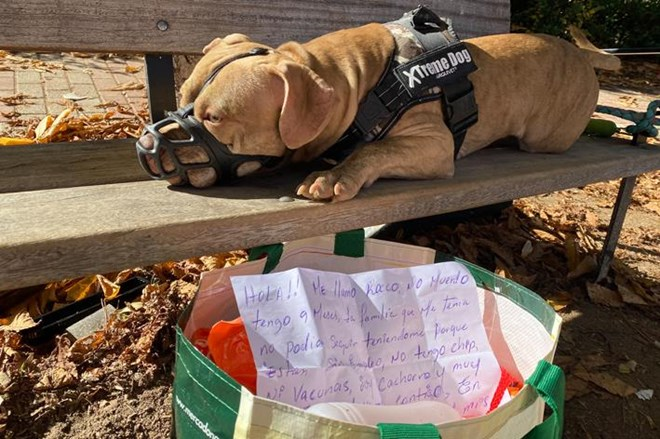
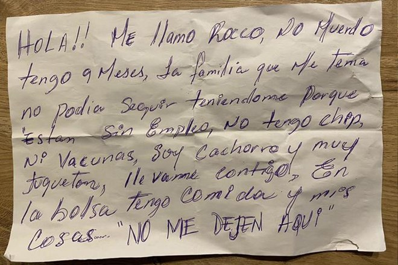
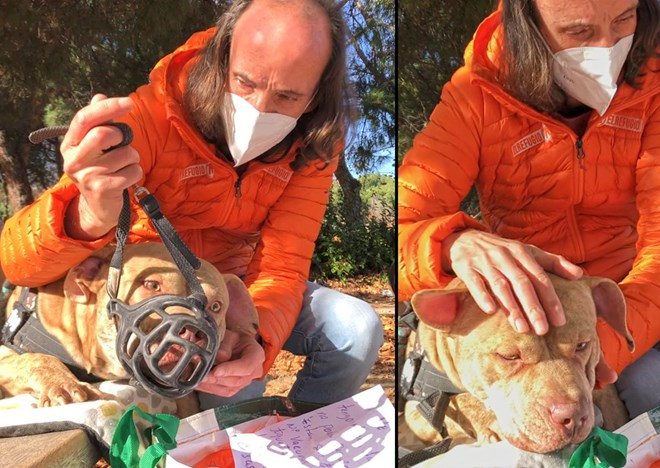
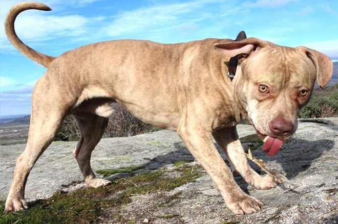
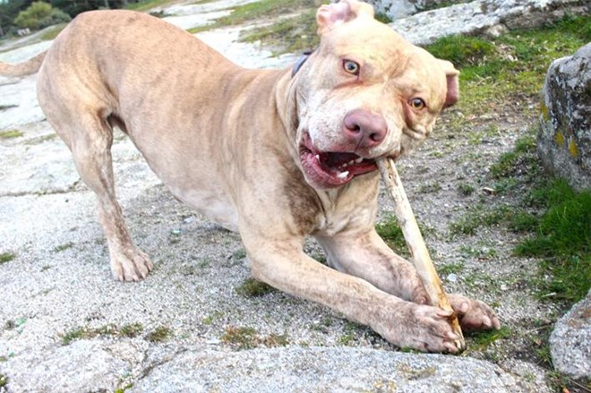

Enamorate y adoptá
Fecha de publicación: Olavarría, 5 de julio del 2024
A lo largo de toda su vida, mi madre me fue dejando un rico legado de pequeños secretos de los que poder servirme para conseguir hacer de esta vida, una experiencia memorable. Y no lo hizo con teoremas ni ensayos, sino con todos y cada uno de sus actos, y gestos cotidianos. El primero y mayor mandato a respetar, es vivir con alegría. Cultivarla, mimarla, disfrutarla. Defender la alegría por encima de todas las cosas, porque sin ella, la vida se convierte en un lento y tedioso tránsito hacia la muerte.
Una familia de mediana edad, junto con sus dos hijos y sus dos perros de tamaño considerable, se encontraban viviendo dentro de su coche. No era un vehículo espacioso, ni mucho menos un modelo con un maletero familiar donde al menos los perros pudieran tener su propio espacio en la parte trasera. La primera vez que me topé con esta realidad, experimenté una mezcla de emociones intensas en apenas cinco segundos. Primero, sentí una profunda rabia por la injusticia de perder el derecho básico a una vivienda digna. ¿Cómo es posible que alguien se vea obligado a vivir así en pleno siglo XXI? Luego, una oleada de admiración me inundó al pensar en la determinación de esta familia. ¡Claro que sí! Sus perros eran parte integral de su unidad familiar. Si tenían que vivir en el coche, todos estarían juntos en esa situación tan adversa. Finalmente, la realidad me golpeó con fuerza. Podría ser yo el protagonista de esa historia. Todos estamos expuestos al riesgo de perderlo todo en un abrir y cerrar de ojos. Si algo estaba seguro, era que no podría separarme de mis propios perros si alguna vez me encontrara en una situación tan desesperada. En un mundo donde tantos abandonan a sus animales cuando estos se convierten en una carga, el amor incondicional de esta familia hacia sus perros se destacaba como un acto heroico y ejemplar. Esta familia había demostrado que el amor verdadero no conoce barreras, ni siquiera en los momentos más difíciles. El silencio ha llegado a nuestra vida cotidiana, remplazando el ruido constante que alguna vez dominó nuestro entorno. Nos encontramos a menudo testigos de situaciones que nos dejan perplejos, sin saber qué decir o hacer. Los humanos solíamos practicar el arte de no escuchar, de responder sin comprender, de ver sin mirar verdaderamente. Pero ahora, nos toca aprender a guardar silencio. Cada día nos enfrentamos a historias dolorosas y complicadas que involucran a miles de animales inocentes, pagando un precio alto por nuestros errores. Ellos permanecen inquebrantables a nuestro lado, sin importar las circunstancias. Mientras nosotros buscamos la felicidad en cosas materiales y complejas, ellos encuentran la suya simplemente estando con nosotros. ¡Qué locura somos los humanos, necesitando tanto para sentirnos felices! Recientemente, vivimos otra de esas historias que nos dejó más en silencio que con palabras. Una joven encontró a un perro con bozal, atado a un banco con una nota escrita a mano y una bolsa llena de pertenencias en España. Esta historia es solo una de muchas, recordándonos la importancia de actuar con compasión y empatía, en lugar de juzgar precipitadamente. Es un llamado a la reflexión sobre nuestras acciones y responsabilidades hacia aquellos que dependen de nosotros, sean humanos o animales.
Así fue encontrado Rocco luego de ser abandonado. Debajo la nota que lo acompañaba
¿Cómo se te queda el cuerpo tras leer esta nota?
Quizás la palabra más apropiada sea “triste”, muy triste. Es evidente que ningún abandono es aprobable, ni aceptable, sino todo lo contrario, y esto es algo que sostendremos siempre. Pero también es cierto que no todos los abandonos se producen de la misma forma, ni desencadenan las mismas consecuencias, ni dibujan el mismo perfil de las personas que pueden llegar a abandonar a un animal. Se podría equiparar a los distintos tipos de crímenes cometidos por los humanos, y de cómo la justicia los juzga de forma más o menos severa, según considere que se hayan producido en ellos, hechos que puedan resultar atenuantes, o agravantes.
Rocco fue abandonado en un lugar muy frecuentado por personas que iban a poder leer el mensaje escrito a bolígrafo, repasando las letras hasta tres veces para asegurarse de que el mensaje no se borre,contando la historia en voz del propio can, persiguiendo así llegar de forma directa al corazón de quien lo lea para que se quede con él, contando toda la verdad sobre lo que tiene y lo que no, y acompañado por el equipaje completo de todos sus enseres, para poder emprender un viaje hacia su nueva vida junto a otra familia que pueda quererlo como merece. A los “abandonadores” de pozo y cuneta, les decimos que los perseguimos con todas nuestras fuerzas, para intentar sentarlos frente a un juez, y que sean juzgados y condenados por sus delitos. Sin embargo, reiterando que ningún abandono nos parece aceptable, a la familia que ha abandonado a Rocco, hoy, nos cuesta juzgarla. Hay en cada detalle de esta historia signos de ternura, de preocupación, y creemos que hasta de mucho dolor por la separación.
Año tras años venimos conociendo historias tremendas, una tras otra, sin parar. Casos muy complejos de resolver, de perros y gatos muy mayores, muchos de ellos en estado de salud muy deteriorada, para los que es mucho más complicado de lo habitual encontrar familias dispuestas a adoptarlos. Estas circunstancias se hace cada vez mas dificil, ya sea por la saturación en el ámbito veterinario para hacer frente a los tratamientos e intervenciones que requieren. También se está generando una necesidad extra en el ámbito de las casas de acogida, los refugios , sumandole las dificultades economicas, es así que las adopciones se vuelven inalcanzables casi un sueño imposible.
 Y si hablamos de ayudar, pese a la distancias, Rocco se encuentra en adopción. En tu ciudad, en tu país, hay miles de Rocco esperando que voltes a verlos, esperan ser amados y cuidados pero más aún esperan encontrar esa familia para siempre.
Te están esperando, vení a conocerlos...
Visita estos enlaces y abrí tu corazón.
Ingresá acá: link
Ingresá acá: link
Ingresá acá: link
link